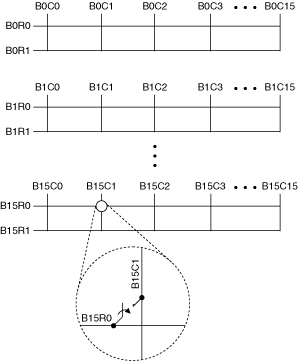
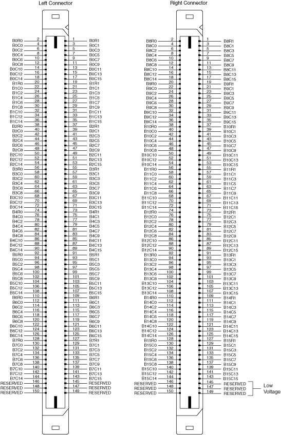

The following figure represents the NI PXI/PXIe-2531 in the 1-wire sixteen 2×16 matrix topology.

Both the scanning command, b15r0->b15c1;, and the immediate operation, niSwitch Connect Channels VI or the niSwitch_Connect function with parameters b15r0 and b15c1, result in the following connection:
signal connected to B15R0 is routed to B15C1
|
Note While you can, for example, connect B0R1 to B0C0, you cannot connect B0R1 directly to B1C1 in this topology. |
The following figure identifies the pins for the NI 2531.

 |
Caution Do not connect to RESERVED pins. Keep low-voltage pins isolated from row and column channels when high voltage is present. |